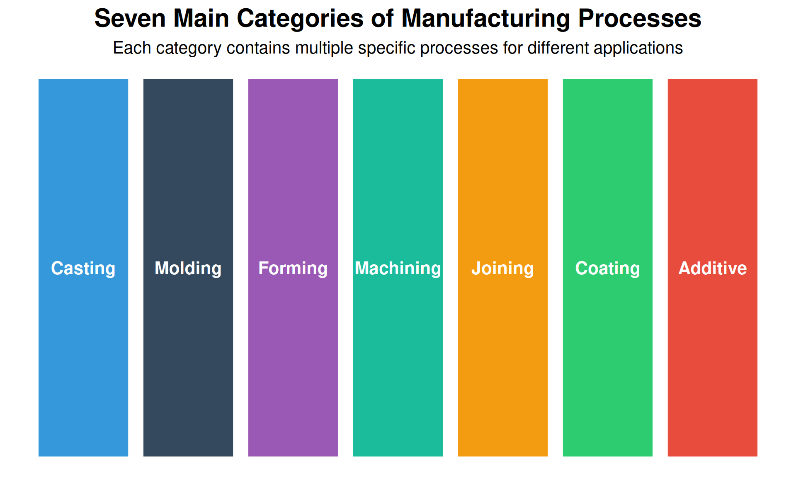
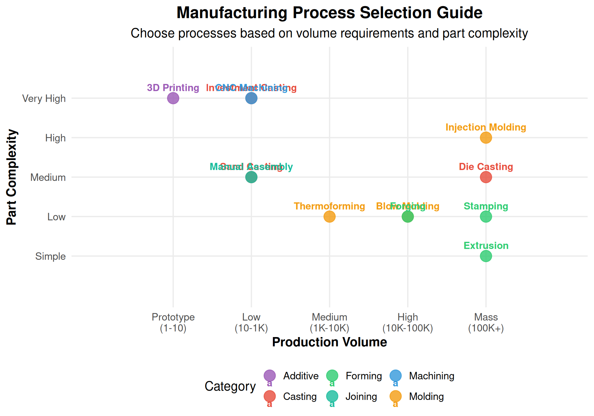
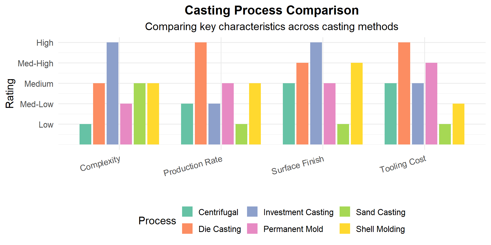
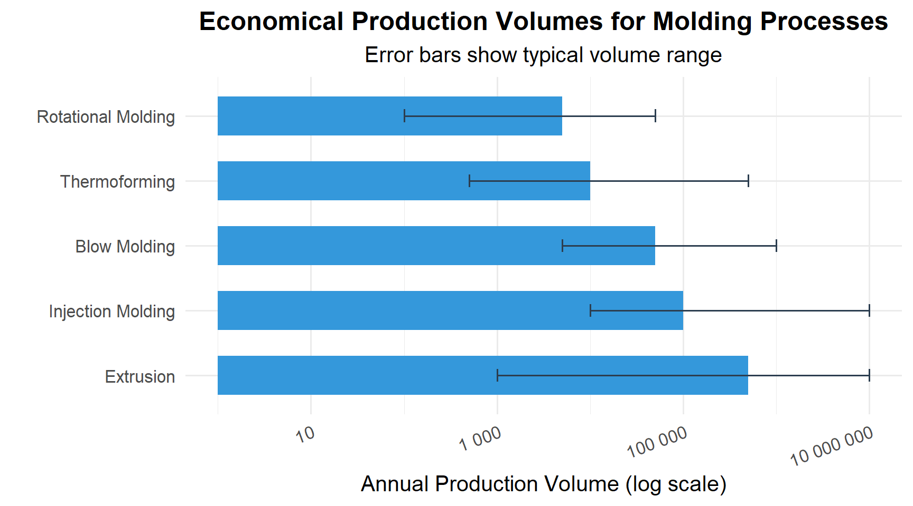
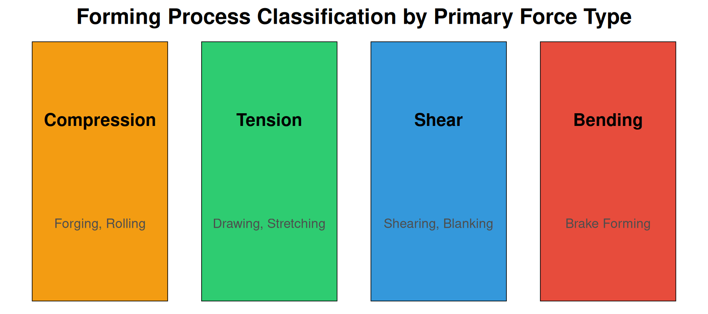
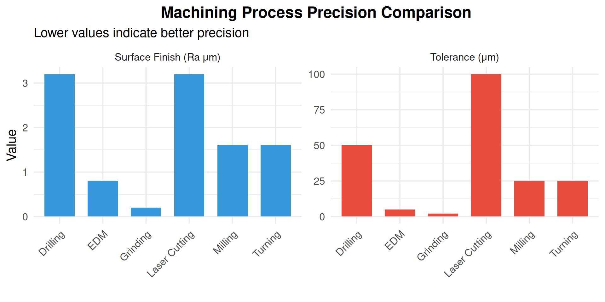
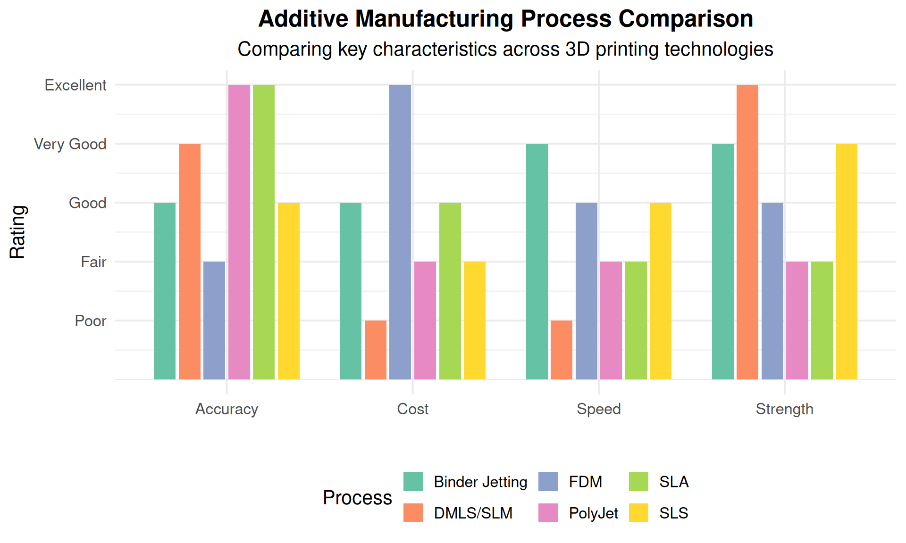
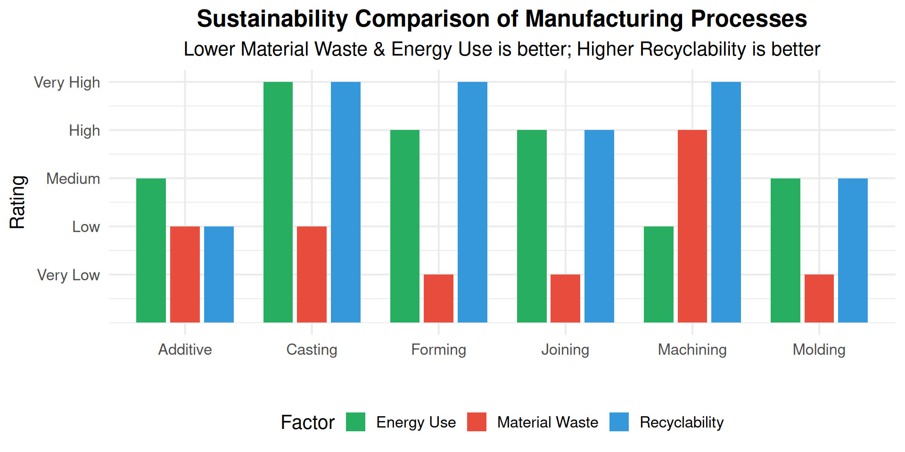

1 Types of Manufacturing Processes
1.1 Learning Objectives
By the end of this chapter, you will be able to:
- Identify and classify the seven main types of manufacturing processes
- Select appropriate manufacturing processes based on material, volume, and precision requirements
- Compare cost, speed, and quality trade-offs between process types
- Recognize manufacturing processes used in automotive, food, and defense industries
- Apply process selection criteria to real-world manufacturing scenarios
1.2 Introduction to Manufacturing Processes
Manufacturing is defined as the conversion of raw materials into finished goods on a large scale using man and machine. Manufacturing processes are the specific methods used for this conversion. Based on product requirements, different types of manufacturing processes are selected to achieve the required output with optimal cost, quality, and efficiency.
Why do we need different manufacturing processes?
Different products require different manufacturing approaches based on:
- Material type: Metals, plastics, ceramics, composites
- Production volume: One-off prototypes vs. millions of units
- Geometric complexity: Simple shapes vs. intricate details
- Precision requirements: Loose tolerances vs. micron-level accuracy
- Cost constraints: Budget limitations affect process selection
- Lead time: How quickly parts are needed
No single process is optimal for all situations!
A good video summarizing 6 of the 7 manufacturing processes is linked below (Coating/Plating is not covered):
1.3 Process Selection Framework
Before examining each process type, it’s important to understand how engineers select the right manufacturing process. The following visualization shows the key factors:

| Process Type | Typical Materials | Production Volume | Typical Tolerance | Tooling Cost | Unit Cost at Volume |
|---|---|---|---|---|---|
| Casting | Metals, alloys | Low to High | ±0.5-2mm | Medium-High | Low |
| Molding | Plastics, rubber | Medium to Very High | ±0.1-0.5mm | High | Very Low |
| Forming | Metals, sheet | Medium to Very High | ±0.1-1mm | Medium-High | Low |
| Machining | All materials | Low to Medium | ±0.01-0.1mm | Low | High |
| Joining | All materials | All volumes | Varies | Low | Medium |
| Coating | All materials | All volumes | N/A | Low | Low |
| Additive | Plastics, metals, ceramics | Prototype to Low | ±0.1-0.3mm | None | High |
1.4 1. Casting Processes
Casting is a process of pouring liquid metal into a mold containing the hollow shape of the desired outcome. It uses sprue, gates, and runners to direct the molten metal flow.

1.4.1 Sand Casting
Sand casting is a metal casting process that uses sand as the mold material. This process has a low production rate as the sand mold must be destroyed to remove the part. However, it is economical for low-volume production.
Process Steps:
- Create a pattern (usually wood or metal)
- Pack sand around the pattern to form the mold
- Remove the pattern, leaving a cavity
- Pour molten metal into the cavity
- Allow solidification
- Break the sand mold to remove the casting
Advantages: Low tooling cost, can produce very large parts, suitable for all metals
Disadvantages: Poor surface finish, loose tolerances, slow cycle time
Examples: Engine blocks, machine tool bases, cylinder heads, pump housings, large gears
Discussion: Why is sand casting still widely used despite its limitations?
Sand casting remains popular because:
- Low startup cost - A wood pattern costs hundreds vs. steel dies costing tens of thousands
- Flexibility - Easy to modify patterns for design changes
- Size capability - Can cast parts weighing several tons
- Material versatility - Works with nearly any metal
- Short lead time - Parts can be produced in days vs. weeks for die casting
For prototypes and low-volume production (< 500 parts), sand casting is often the most economical choice even with its lower quality.
1.4.2 Die Casting
Die casting is used for producing metal parts where high precision is required. Molten metal is forced under high pressure into reusable metal dies, enabling high-volume production.
Process:
- Steel molds (dies) are machined to the part shape
- Dies are mounted in a die casting machine
- Molten metal is injected under high pressure (10-175 MPa)
- Metal solidifies rapidly due to die cooling
- Part is ejected and the cycle repeats
Advantages: Excellent dimensional accuracy, smooth surface finish, high production rates (up to 400 shots/hour)
Disadvantages: High die cost ($50,000-$500,000), limited to non-ferrous metals, porosity issues
Examples: Engine components, transmission housings, electronic enclosures, power tool housings
1.4.3 Investment Casting (Lost-Wax)
Investment casting produces complex, precision parts by creating a wax pattern that is “invested” (surrounded) with ceramic slurry, then melted out to leave a mold cavity.
Advantages: Excellent surface finish, tight tolerances (±0.1%), complex geometries, any castable metal
Disadvantages: Expensive, slow cycle time, limited part size
Examples: Turbine blades, aerospace components, medical implants, jewelry, firearm components
Why do aerospace companies pay premium prices for investment casting?
Investment casting is essential for aerospace because:
- Complex internal passages - Turbine blades have intricate cooling channels
- Superior metallurgy - Controlled solidification produces better grain structure
- Near-net shape - Minimizes machining of expensive superalloys
- Weight savings - Can create hollow structures impossible with other methods
- Material options - Works with titanium, Inconel, and other aerospace alloys
A single turbine blade might cost $1,000-$5,000, but there’s no other process that can produce the required geometry and performance.
1.4.4 Centrifugal Casting
Centrifugal casting spins molten metal in a rotating die, using centrifugal force to distribute the metal and float impurities to the inner surface.
Applications: Pipes, tubes, cylinder liners, bushings, rings
1.4.5 Permanent Mold Casting
Uses reusable metal molds with gravity or low-pressure filling. Good for medium-volume production of aluminum and copper alloy parts.
Applications: Pistons, gear housings, wheels, pipe fittings
1.4.6 Shell Molding
Uses resin-coated sand that forms a thin, strong shell around a heated pattern. Better dimensional accuracy than sand casting.
Applications: Gear housings, cylinder heads, connecting rods
1.5 2. Molding Processes
Molding uses a rigid frame to shape hot liquid or ductile raw material. It is predominantly used for plastics and rubber products.

1.5.1 Injection Molding
Injection molding is the most common process for manufacturing plastic parts. Plastic pellets are melted and injected under high pressure into a mold cavity.
Process Cycle:
- Clamping - Mold halves are clamped together
- Injection - Molten plastic is injected into the cavity
- Cooling - Part solidifies in the mold
- Ejection - Part is pushed out by ejector pins
Cycle times: 10-60 seconds typical, as fast as 2 seconds for small parts
Examples: Automotive dashboards, phone cases, medical devices, food containers, toys
# Injection Molding Cost Analysis Example
# Comparing costs at different production volumes
mold_cost <- 50000 # Typical mold cost in dollars
material_cost_per_kg <- 2.50 # ABS plastic
part_weight_kg <- 0.1
cycle_time_sec <- 30
machine_rate_per_hour <- 75 # Machine + operator cost
# Calculate cost per part at different volumes
volumes <- c(1000, 10000, 50000, 100000, 500000)
cost_analysis <- data.frame(
Volume = volumes,
Mold_Per_Part = mold_cost / volumes,
Material = part_weight_kg * material_cost_per_kg,
Processing = (cycle_time_sec / 3600) * machine_rate_per_hour
)
cost_analysis$Total_Per_Part <- cost_analysis$Mold_Per_Part +
cost_analysis$Material +
cost_analysis$Processing
cat("Injection Molding Cost Breakdown:\n")Injection Molding Cost Breakdown:cat("================================\n")================================for(i in 1:nrow(cost_analysis)) {
cat(sprintf("At %s parts: $%.2f per part (Tooling: $%.2f, Material: $%.2f, Processing: $%.2f)\n",
format(cost_analysis$Volume[i], big.mark=","),
cost_analysis$Total_Per_Part[i],
cost_analysis$Mold_Per_Part[i],
cost_analysis$Material[i],
cost_analysis$Processing[i]))
}At 1,000 parts: $50.88 per part (Tooling: $50.00, Material: $0.25, Processing: $0.62)
At 10,000 parts: $5.88 per part (Tooling: $5.00, Material: $0.25, Processing: $0.62)
At 50,000 parts: $1.88 per part (Tooling: $1.00, Material: $0.25, Processing: $0.62)
At 1e+05 parts: $1.38 per part (Tooling: $0.50, Material: $0.25, Processing: $0.62)
At 5e+05 parts: $0.97 per part (Tooling: $0.10, Material: $0.25, Processing: $0.62)Discussion: When does injection molding become cost-effective vs. 3D printing?
Break-even analysis:
- 3D printing: ~$5-20 per part (no tooling, slow production)
- Injection molding: $50,000 tooling + $0.50-2 per part
Break-even point: Approximately 5,000-10,000 parts
Rule of thumb: - < 500 parts: 3D printing or machining - 500-5,000 parts: Consider soft tooling (aluminum molds) - > 5,000 parts: Steel injection molds become economical
1.5.2 Blow Molding
Blow molding creates hollow plastic parts by inflating a heated plastic tube (parison) inside a mold cavity.
Types: - Extrusion blow molding - Parison extruded, then blown - Injection blow molding - Preform injection molded, then blown - Stretch blow molding - Preform stretched and blown (PET bottles)
Examples: Bottles, containers, fuel tanks, automotive ducts, toys
1.5.3 Rotational Molding
Creates hollow parts by rotating a mold on two axes while heating, causing plastic powder to melt and coat the interior surface.
Advantages: Low tooling cost, no internal stresses, large hollow parts
Examples: Kayaks, playground equipment, tanks, coolers
1.5.4 Thermoforming
Heats a plastic sheet until pliable, then forms it over a mold using vacuum, pressure, or mechanical force.
Examples: Packaging (blister packs), disposable cups, refrigerator liners
1.5.5 Powder Metallurgy
Though involving metal, powder metallurgy uses molding principles. Metal powders are compacted in dies and sintered (heated below melting point) to fuse particles.
Advantages: Near-net shape, complex geometries, controlled porosity
Examples: Self-lubricating bearings, gears, filters, magnets
1.6 3. Forming Processes
Forming uses mechanical forces (compression, tension, shear) to shape material without removing any material. This preserves material grain structure and can improve mechanical properties.

1.6.1 Forging
Forging uses compressive forces from hammers or presses to shape heated metal. Forged parts have superior strength due to aligned grain structure.
Types of Forging: - Open-die forging - Simple shapes, large parts - Closed-die (impression) forging - Complex shapes, high volume - Cold forging - Room temperature, excellent finish - Hot forging - Heated material, easier deformation
Examples: Crankshafts, connecting rods, gears, aircraft structural components, hand tools
Why are aircraft landing gear forgings so expensive?
Aircraft landing gear forgings can cost $100,000+ because:
- Material - High-strength steel or titanium alloys
- Size - Large parts require massive presses (50,000+ tons)
- Certification - Extensive testing and documentation
- Grain flow - Must be optimized for fatigue resistance
- NDT requirements - 100% ultrasonic and magnetic particle inspection
- Low volume - Only a few hundred per aircraft type per year
The forged grain structure provides 20-40% better fatigue life than equivalent castings or machined parts.
1.6.2 Stamping
Stamping uses dies and presses to form, cut, or shape sheet metal. Modern stamping lines can produce 1,000+ parts per hour.
Operations include: - Blanking - Cutting flat shapes from sheet - Piercing - Punching holes - Drawing - Forming cup shapes - Bending - Creating angles - Coining - Fine detail forming
Examples: Automotive body panels, appliance housings, electronic enclosures
1.6.3 Bending
Bending uses press brakes to create angular shapes in sheet metal.
Key formula: \[\text{Bend Allowance} = \frac{\pi \times A \times (R + K \times T)}{180}\]
Where: A = bend angle, R = inside radius, T = material thickness, K = K-factor (typically 0.3-0.5)
1.6.4 Shearing
Shearing cuts sheet metal without chip formation using opposed cutting edges.
Types: Blanking, piercing, trimming, notching, slitting
1.6.5 Rolling
Reduces material thickness by passing through rotating rolls. Used for sheet, plate, and structural shapes.
1.6.6 Extrusion (Metal)
Forces material through a die to create constant cross-section profiles.
Examples: Aluminum window frames, heat sinks, structural shapes
1.7 4. Machining Processes
Machining removes material using cutting tools to achieve precise dimensions and surface finishes. It is the most versatile manufacturing process but typically has higher per-part costs.

1.7.1 Turning
Rotates the workpiece while a cutting tool moves to create cylindrical shapes.
Performed on lathes or turning centers
Operations: Facing, turning, boring, threading, grooving, parting
1.7.2 Milling
Rotates a cutting tool while moving the workpiece to remove material. The most versatile machining process.
Types: - Peripheral milling - Cutter axis parallel to surface - Face milling - Cutter axis perpendicular to surface - End milling - Creates slots, pockets, contours
1.7.3 Drilling
Creates cylindrical holes using rotating drill bits.
Related operations: Reaming (sizing), boring (enlarging), tapping (threading)
1.7.4 Grinding
Uses abrasive wheels for precision finishing. Achieves the finest tolerances and surface finishes.
Types: Surface grinding, cylindrical grinding, centerless grinding
1.7.5 Electrical Discharge Machining (EDM)
Uses electrical sparks to erode conductive materials. Essential for hardened materials and complex geometries.
Applications: Injection mold cavities, dies, aerospace components
When should you use EDM instead of conventional machining?
Choose EDM when:
- Hardened materials - Can machine 60+ HRC steels that would destroy cutting tools
- Complex internal features - Wire EDM cuts intricate shapes
- Tight corners - Can achieve sharp internal corners impossible with rotary tools
- Fragile parts - No cutting forces (non-contact process)
- Thin walls - No deflection from tool pressure
Limitations: - Slow material removal (grams/hour vs. kg/hour for milling) - Only works on conductive materials - Recast layer may need removal - Higher cost per part
1.8 5. Joining Processes
Joining combines two or more components into a single assembly. Methods range from permanent (welding) to removable (fasteners).
| Process | Joint Strength | Dissimilar Metals | Automation | Typical Applications |
|---|---|---|---|---|
| Arc Welding | Excellent | Limited | Medium | Structural steel, pressure vessels |
| Resistance Welding | Excellent | Limited | High | Auto body panels, wire mesh |
| Laser Welding | Excellent | Limited | High | Electronics, medical devices |
| Brazing | Good | Yes | Medium | Carbide tooling, HVAC |
| Soldering | Fair | Yes | High | Electronics, plumbing |
| Adhesive Bonding | Good | Yes | High | Composites, glass, plastics |
| Mechanical Fastening | Excellent | Yes | High | All industries |
1.8.1 Welding
Melts and fuses base materials together, often with added filler metal.
Common Types: - MIG (GMAW) - Gas Metal Arc Welding - fast, easy automation - TIG (GTAW) - Gas Tungsten Arc Welding - precise, clean welds - Stick (SMAW) - Shielded Metal Arc Welding - versatile, field use - Resistance - Uses electrical resistance heating - Laser/Electron Beam - High precision, deep penetration
1.8.2 Brazing and Soldering
Joins metals using a filler metal with a lower melting point than the base materials. The base materials do not melt.
- Brazing - Filler melts above 450°C (840°F)
- Soldering - Filler melts below 450°C
1.8.3 Adhesive Bonding
Uses chemical adhesives to join materials. Essential for composites, glass, and dissimilar materials.
Advantages: Distributes stress, joins dissimilar materials, seals against fluids
Disadvantages: Surface preparation critical, limited temperature resistance, aging concerns
1.8.4 Mechanical Fastening
Uses bolts, screws, rivets, or clips. Allows disassembly for maintenance.
1.9 6. Surface Treatment and Coating
Coating and surface treatment processes protect parts from corrosion, wear, or environmental damage, and can improve appearance or electrical properties.
| Process | Typical Thickness | Base Material | Primary Benefit | Industry |
|---|---|---|---|---|
| Electroplating | 1-50 μm | Conductive metals | Corrosion, appearance | Automotive, electronics |
| Anodizing | 5-100 μm | Aluminum | Corrosion, hardness | Aerospace, construction |
| Powder Coating | 50-150 μm | Any metal | Corrosion, appearance | Appliances, furniture |
| Painting | 25-75 μm | Any | Appearance | All |
| Hot Dip Galvanizing | 45-85 μm | Steel | Corrosion | Construction, automotive |
| PVD/CVD | 1-10 μm | Any | Wear, hardness | Tooling, aerospace |
| Thermal Spray | 100-500 μm | Any | Wear, thermal barrier | Aerospace, energy |
1.9.1 Electroplating
Deposits metal coating using electrical current. Common coatings include chrome, nickel, zinc, gold, and silver.
1.9.2 Anodizing
Electrochemically grows an oxide layer on aluminum. Provides corrosion resistance and can be dyed various colors.
1.9.3 Powder Coating
Applies dry powder electrostatically, then cures with heat. Produces thick, durable, attractive finishes.
1.9.4 Galvanizing
Coats steel with zinc for corrosion protection. Hot-dip galvanizing provides excellent outdoor durability.
1.10 7. Additive Manufacturing (3D Printing)
Additive manufacturing builds parts layer-by-layer from digital models. It’s the opposite of machining (subtractive manufacturing).

1.10.1 FDM (Fused Deposition Modeling)
Extrudes thermoplastic filament through a heated nozzle. Most common desktop 3D printing technology.
Materials: PLA, ABS, PETG, Nylon, TPU
1.10.2 SLA (Stereolithography)
Uses UV laser to cure liquid photopolymer resin. Excellent surface finish and detail.
1.10.3 SLS (Selective Laser Sintering)
Fuses powder material with a laser. Produces strong functional parts without support structures.
1.10.4 Metal 3D Printing (DMLS/SLM)
Fuses metal powder with high-power lasers. Used for aerospace, medical, and tooling applications.
When does metal 3D printing make sense vs. traditional manufacturing?
Metal 3D printing is advantageous when:
- Complex internal features - Conformal cooling channels in molds
- Topology optimization - Organic shapes that minimize weight
- Consolidation - Combining multiple parts into one
- Low volume - Too few parts to justify tooling
- Custom/one-off - Medical implants, prototypes
Traditional manufacturing is better when: - High volumes (> 100-1000 parts depending on complexity) - Simple geometries - Large parts (3D print beds are limited) - Maximum strength required (forging still superior)
Cost comparison: - Simple bracket: $5 machined vs. $50+ 3D printed - Complex aerospace part: $10,000 machined vs. $3,000 3D printed
1.11 Industry Applications
| Process | Automotive | Food Industry | Defense/Aerospace |
|---|---|---|---|
| Die Casting | Engine blocks, transmission cases | Equipment housings | Aircraft structural components |
| Injection Molding | Dashboard, interior trim, connectors | Packaging, containers, caps | Connectors, housings, switches |
| Forging | Crankshafts, connecting rods, gears | Mixer blades, pump impellers | Landing gear, turbine disks |
| Stamping | Body panels, structural components | Cans, trays, lids | Aircraft skins, missile bodies |
| Machining | Engine components, precision parts | Valves, fittings | Precision weapons components |
| Welding | Body structure, exhaust systems | Tanks, piping, conveyors | Aircraft structures, armor |
| Powder Coating | Wheels, chassis components | Equipment frames | Military vehicles, equipment |
| 3D Printing | Prototypes, custom fixtures | Custom tooling, fixtures | Turbine blades, brackets, tooling |
1.12 Sustainability in Manufacturing
Modern manufacturing must consider environmental impact. Here’s how different processes compare:

Discussion: How can manufacturers reduce environmental impact?
Strategies for sustainable manufacturing:
- Near-net-shape processes - Casting, forging, and molding reduce machining waste
- Closed-loop recycling - Reprocess scrap material on-site
- Energy-efficient equipment - Modern machines use 30-50% less energy
- Additive manufacturing - Only uses material where needed
- Water-based coatings - Replace solvent-based paints
- Lean manufacturing - Reduces overproduction and waste
- Life cycle assessment - Consider total environmental impact
Example: Aluminum die casting recycles 95%+ of sprues and runners, while machining from billet may waste 80% of material.
1.13 Review Questions
Question 1: Process Identification
A company needs to produce 50,000 aluminum housings per year. Each housing is a complex shape with internal fins for heat dissipation. The surface must be smooth and dimensions must be within ±0.3mm. Which process would you recommend?
Answer: Die Casting is the best choice because: - High volume (50,000/year) justifies tooling cost - Aluminum is ideal for die casting - Complex internal features are possible - ±0.3mm tolerance is achievable - Good surface finish without secondary operations
Alternative: If volumes were lower (< 5,000), investment casting might be considered.
Question 2: Cost Comparison
Calculate the break-even point between 3D printing and injection molding for a small plastic part: - 3D printing: $8 per part (no tooling) - Injection molding: $25,000 mold + $0.50 per part
Answer: Let n = number of parts
Break-even: $8n = $25,000 + $0.50n
$7.50n = $25,000
n = 3,333 parts
Below 3,333 parts: 3D printing is cheaper Above 3,333 parts: Injection molding is cheaper
At 10,000 parts: - 3D printing: $80,000 - Injection molding: $30,000
Question 3: Material Selection
Match each material/product to the most appropriate manufacturing process:
- Stainless steel surgical instrument
- Large plastic kayak
- Titanium jet engine bracket
- Aluminum beverage can
Answers:
- Investment casting or machining - Complex shapes, high precision, excellent surface finish
- Rotational molding - Large hollow plastic part, low tooling cost
- Additive manufacturing (DMLS) or forging - Complex geometry, lightweight, strength critical
- Deep drawing (stamping) - Very high volume, thin-wall cylinder
Question 4: Process Selection Scenario
You need to manufacture a new product with these requirements: - Quantity: 200 units for initial market test - Material: ABS plastic - Size: 150mm × 100mm × 50mm - Tolerance: ±0.5mm - Surface: Smooth, will be painted
What process would you recommend and why?
Answer: 3D Printing (FDM or SLA) would be most appropriate because:
- Low quantity (200) - Injection molding tooling ($30,000+) not justified
- Market test phase - Design may change based on feedback
- Quick turnaround - Parts in days vs. weeks for tooling
- Tolerances achievable - ±0.5mm is within FDM capabilities
- Post-processing acceptable - Parts will be painted anyway
Cost comparison: - FDM: 200 × $15 = $3,000 - Injection molding: $30,000 + (200 × $1) = $30,200
If the product succeeds and volume increases to 10,000+, transition to injection molding.
Question 5: Hybrid Manufacturing
What is hybrid manufacturing and when is it used?
Answer: Hybrid manufacturing combines additive and subtractive processes in a single machine or workflow.
Common combinations: - 3D print near-net shape → CNC machine critical surfaces - Cast blank → Machine precision features - Forge rough shape → Machine final dimensions
Benefits: - Reduced material waste vs. pure machining - Better precision than pure additive - Faster than pure machining for complex parts
Example: Aerospace companies 3D print titanium brackets, then machine mounting surfaces to achieve tight tolerances. This can reduce material waste by 90% compared to machining from billet.
1.14 Summary
| Process Category | Key Principle | Best For | Typical Industries |
|---|---|---|---|
| Casting | Pour liquid into mold | Complex metal shapes, medium-high volume | Automotive, aerospace |
| Molding | Shape heated/softened material | Plastic parts, very high volume | Consumer products, packaging |
| Forming | Deform solid with force | Strong metal parts, high volume | Automotive, construction |
| Machining | Remove material with tools | Precision parts, any material | All industries |
| Joining | Combine multiple parts | Assembly of components | All industries |
| Coating | Apply protective layer | Corrosion/wear protection | All industries |
| Additive | Build layer by layer | Prototypes, complex geometry | Aerospace, medical, prototyping |
1.14.1 Key Takeaways
- No single process is best for everything - Selection depends on material, volume, complexity, and cost constraints
- Volume drives economics - High tooling costs require high volumes to amortize
- Consider the complete supply chain - Secondary operations, assembly, and finishing affect total cost
- Sustainability matters - Modern manufacturing must minimize waste and energy use
- Hybrid approaches are growing - Combining processes optimizes cost and performance
1.15 References
- Groover, M.P. (2020). Fundamentals of Modern Manufacturing (7th ed.). Wiley.
- Kalpakjian, S., & Schmid, S.R. (2020). Manufacturing Engineering and Technology (8th ed.). Pearson.
- DeGarmo, E.P., Black, J.T., & Kohser, R.A. (2019). DeGarmo’s Materials and Processes in Manufacturing (13th ed.). Wiley.
- Afzal, M. “Types of Manufacturing Processes.” Engineering Articles.